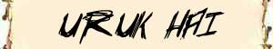

|
|
Ambiente/Habitat | Montagne, Colline, Pianure, Steppe, Caverne |
| Frequenza | Non Comune | |
| Organizzazione | Warband | |
| Periodo di Attività | Qualsiasi, preferendo all'esterno le ore notturne | |
| Dieta | Carnivora | |
| Intelligenza | Low intelligence (7) | |
| Punti Combattimento | 5 Punti Combattimento | |
| Tesoro | Comune | |
| Allineamento Dominante | Neutrale Malvagio | |
| Numero di Apparizione | Vedi sotto | |
| Classe Armatura | 5 [10 base, 5 corazza] / 4 con scudo | |
| Movimento | 7 esagoni | |
| Dadi Vita | 2 (+4 punti ferita) | |
| Thac0 | 18 | |
| Numero di Attacchi | Arma | |
| Danni | Danno dell'arma +1 per le forza | |
| Poteri Offensivi | Istinto Predatorio; | |
| Poteri Difensivi | Robustezza Superiore (+4 punti ferita); | |
| Poteri Generici | Nessuna; | |
| Vulnerabilità | Sensibilità alla Luce Solare; | |
| Resistenza alla Magia | Nessuna | |
| Sensi | Oscurovisione | |
| Dimensioni | Medium (2 m. di altezza) | |
| Morale | Steady (11) | |
| Valore in Punti Esperienza | 82 |
|
TIRI SALVEZZA DELLA CREATURA |
|||||||
| CORAGGIO | ENERGIA VITALE | MAGIA | MALATTIA | MENTE | RIFLESSI | ROBUSTEZZA | VELENO |
| 0 | 0 | 0 | +5% | 0 | 0 | +5% | 0 |
| 52 | 58 | 65 | 46 | 63 | 57 | 51 | 53 |
Descrizione
Gli orchi sono creature umanoidi grottesche e parzialmente deformi, dalla pelle verdastra con riflessi o chiazze di colore marrone o giallastro. Il volto è schiacciato, la bocca ampia dotata e di zanne, gli occhi, spesso dal colore rosso sangue, sono particolarmente adatti a vedere al buio dato che trascorrono gran parte della loro vita in caverne e gallerie.
Combat
Gli orchi sono esperti combattenti e sono in grado di elaborare tattiche di lotta efficaci. Costoro, però, non rispettano alcuna "regola di guerra" a meno che non sia per loro vantaggiosa. Per gli orchi, infatti, il combattimento è l'occasione adatta a dimostrare la propria forza ed il proprio coraggio ma per costoro la vittoria è un obiettivo tanto anelati che per il suo raggiungimento qualsiasi mezzo, anche se sporco o scorretto, può considerarsi lecito. Non è raro che gli orchi abusino delle regole di cavalleria diffuse tra gli umani e le altre razze civilizzate sfruttandole per ottenere un vantaggio in battaglia. Per gli orchi, la predisposizione di trappole ed imboscate rappresenta certamente una valida alternativa utilizzabile per abbattere un nemico altrimenti troppo difficile da sconfiggere.
Essendo combattenti pragmatici, gli orchi non disdegnano l'uso di armi da tiro. Per dimostrare la loro forza e coraggio, però, gli orchi preferiscono combattere in corpo a corpo. Solo il numero strettamente necessario di orchi, quindi, sarà equipaggiato con armi da tiro, in preferenza con balestre leggere. Gli orchi, inoltre, riconoscono il vantaggio tattico concesso loro dalle armi lunghe ed in un gruppo armato saranno sempre presenti alcuni orchi armati di polearm.
Per determinare l'arma utilizzata e la composizione di un gruppo armato di orchi si tiri nelle seguenti tabelle:
TIPO DI WARBAND
[1d100]
[1-45] SMALL WARBAND
1d3+2 Orchi di Fanteria
1d3-1 Orchi di Sfondamento
1d3-1 Orco Balestriere
1 Orc Captain
[46-70]
MEDIUM WARBAND
1d6+4 Orchi di Fanteria
1d3+1 Orchi di Sfondamento
1d3+1 Orco Balestriere
2 Orc Captain
Orc Leader (1-50 Uruk Hai - 51-100 Orc di Classe Liv. 1d3)
[71-80]
LARGE WARBAND
2d6+3 Orchi di Fanteria
1d4+2 Orchi di Sfondamento
1d4+2 Orco Balestriere
3 Orc Captain
Orc Leader di Classe Liv. 1d3+2 (33% Uruk Hai)
[81-93]
ORC ELITE TEAM
1d3+2 Uruk Hai
Uruk Hai Leader di Classe Liv. 1d3
[94-100]
ORC ASSAULT TEAM
3d3+1 Uruk Hai
Uruk Hai Leader di Classe Liv. 1d3+2
ORCO DI FANTERIA
[1d10]
[1]
Scimitarra e Scudo (Iniz. +6, Danni
1d8+1)
[2-4]
Eye Axe e Scudo (Iniz. +5, Danni
1d6+2)
[5-7]
Shoka e Scudo (Iniz. +7, Danni
2d4+1)
[8-9]
Morning Star e Scudo (Iniz. +7,
Danni 1d8+1)
[10]
Paddle impugnata a due mani (Iniz.
+6, Danni 1d6+2)
ORCO DI SFONDAMENTO
[1d10]
[1-4]
Awl Pike (Iniz. +7, Danni 1d8+1)
[5-7]
Military Fork (Iniz. +7, Danni
2d3+1)
[8-10]
Pitch Fork (Iniz. +9, Danni 2d3+3)
ORCO BALESTRIERE
Balestra Leggera (Iniz. +7[+2], Danni 1d6+1) / Shoka (Iniz. +7, Danni 2d4+1)
ISTINTO PREDATORIO (Moderate Special Ability): La creatura possiede un forte istinto predatorio, per tale motivo costei riceve un bonus costante di +1 ai suoi tiri per colpire.
ROBUSTEZZA SUPERIORE (Typical Ability): Il fisico della creatura è estremamente robusto. Ciò conferisce alla stessa una robustezza superiore che gli garantisce 4 punti ferita supplementari.
SENSIBILITA' ALLA LUCE SOLARE (Lesser Special Vulnerability): Questa creatura è particolarmente sensibile alla luce solare od alla luce ad essa equivalente (qualsiasi fonte luminosa in grado di illuminare in un raggio di 12 metri). Per tale motivo, quest'essere cerca di evitarla girando all'esterno nelle ore notturne. Se costretta a combattere nel raggio di illuminazione di una luce pari a quella del giorno la creatura subirà una penalità di -1 ai suoi tiri per colpire.
Habitat/Society
Gli orchi hanno un'indole malvagia ed hanno la reputazione di essere oltremodo crudeli, tanto da essere spesso evitati dalle altre razze. Gli orchi sono contraddistinti da un carattere naturalmente aggressivo. Credendo nella loro superiorità di combattimento, sia individuale che basata sul numero e l'addestramento, non esitano ad attaccare nemici per razziarli dei loro beni ed occuparne i territori.
Ecology
Nonostante possano essere creature molto crudeli e sanguinari, infatti, le tribù di orchi sono quasi permanentemente in assetto di guerra ed i loro componenti sviluppano di sovente un'efficienza tattica capace di rivaleggiare con quella utilizzata da eserciti organizzati. È comune che tra due diverse tribù di orchi si scateni una guerra o che le stesse operino in continuo contrasto tra loro.
|
|
Ambiente/Habitat | Montagne, Colline, Pianure, Steppe, Caverne |
| Frequenza | Non Comune | |
| Organizzazione | Solitario | |
| Periodo di Attività | Qualsiasi, preferendo all'esterno le ore notturne | |
| Dieta | Carnivora | |
| Intelligenza | Average intelligence (8) | |
| Punti Combattimento | 11 Punti Combattimento | |
| Tesoro | Comune | |
| Allineamento Dominante | Neutrale Malvagio | |
| Numero di Apparizione | 1 | |
| Classe Armatura | 4 [10 base, 5 corazza, 1 destrezza] / 3 con scudo | |
| Movimento | 7 esagoni | |
| Dadi Vita | 3 (+4 punti ferita) | |
| Thac0 | 17 | |
| Numero di Attacchi | Arma | |
| Danni | Danno dell'arma +2 per le forza | |
| Poteri Offensivi | Istinto Predatorio; Abilità Tattica; |
|
| Poteri Difensivi | Robustezza Superiore (+4 punti ferita); | |
| Poteri Generici | Nessuna; | |
| Vulnerabilità | Sensibilità alla Luce Solare; | |
| Resistenza alla Magia | Nessuna | |
| Sensi | Oscurovisione | |
| Dimensioni | Medium (2 m. di altezza) | |
| Morale | Steady (12) | |
| Valore in Punti Esperienza | 156 |
|
TIRI SALVEZZA DELLA CREATURA |
|||||||
| CORAGGIO | ENERGIA VITALE | MAGIA | MALATTIA | MENTE | RIFLESSI | ROBUSTEZZA | VELENO |
| 0 | 0 | 0 | +5% | 0 | 0 | +5% | 0 |
| 49 | 55 | 62 | 42 | 60 | 54 | 48 | 49 |
Descrizione
Gli orchi capitani sono orchi addestrati alla guerra di maggiore forza e con temperamento ancora più aggressivo. Gli orchi capitani hanno comunemente il ruolo di comando di una piccola warband oppure possono fungere da ufficiali minori o guardie di elite di orchi più potenti.
ISTINTO PREDATORIO (Moderate Special Ability): La creatura possiede un forte istinto predatorio, per tale motivo costei riceve un bonus costante di +1 ai suoi tiri per colpire.
ABILITA' TATTICA (Least Special Ability): La creatura è particolarmente abile nel combattimento per questo motivo riceve permanentemente 3 punti combattimento supplementari.
ROBUSTEZZA SUPERIORE (Typical Ability): Il fisico della creatura è estremamente robusto. Ciò conferisce alla stessa una robustezza superiore che gli garantisce 4 punti ferita supplementari.
SENSIBILITA' ALLA LUCE SOLARE (Lesser Special Vulnerability): Questa creatura è particolarmente sensibile alla luce solare od alla luce ad essa equivalente (qualsiasi fonte luminosa in grado di illuminare in un raggio di 12 metri). Per tale motivo, quest'essere cerca di evitarla girando all'esterno nelle ore notturne. Se costretta a combattere nel raggio di illuminazione di una luce pari a quella del giorno la creatura subirà una penalità di -1 ai suoi tiri per colpire.

|
|
Ambiente/Habitat | Montagne, Colline, Pianure, Steppe, Caverne |
| Frequenza | Non Comune | |
| Organizzazione | Solitario o Piccolo Gruppo | |
| Periodo di Attività | Qualsiasi | |
| Dieta | Carnivora | |
| Intelligenza | Average intelligence (9) | |
| Punti Combattimento | 15 Punti Combattimento | |
| Tesoro | Comune * 2 | |
| Allineamento Dominante | Neutrale Malvagio | |
| Numero di Apparizione | 1d12: (1-4) 1 (5-9) 1d3+2 (10-12) 3d3+1 | |
| Classe Armatura | 3 [10 base, 4 corazza, 1 destrezza] / 2 con scudo | |
| Movimento | 7 esagoni | |
| Dadi Vita | 4 (+8 punti ferita) | |
| Thac0 | 16 | |
| Numero di Attacchi | Arma | |
| Danni | Danno dell'arma +3 per le forza | |
| Poteri Offensivi | Istinto Predatorio; Assaltare; Esperienza Tattica; |
|
| Poteri Difensivi | Robustezza Superiore (+8 punti ferita); | |
| Poteri Generici | Nessuna; | |
| Vulnerabilità | Nessuna; | |
| Resistenza alla Magia | Nessuna | |
| Sensi | Oscurovisione | |
| Dimensioni | Medium (2 m. di altezza) | |
| Morale | Steady (12) | |
| Valore in Punti Esperienza | 378 |
|
TIRI SALVEZZA DELLA CREATURA |
|||||||
| CORAGGIO | ENERGIA VITALE | MAGIA | MALATTIA | MENTE | RIFLESSI | ROBUSTEZZA | VELENO |
| 0 | 0 | 0 | +5% | 0 | 0 | +5% | 0 |
| 49 | 55 | 62 | 42 | 60 | 54 | 48 | 49 |
Descrizione
Alcuni Orchi sono geneticamente selezionati per essere adeguati alla guerra e si distinguono da altre specie di Orchi per via del colore scuro della pelle e delle dimensioni generalmente maggiori. Costoro sono denominati Uruk Hai e rappresentano il fior fiore della razza. Utilizzati come truppa speciale anche per la loro resistenza alla luce solare formano bande d'assalto speciali e particolarmente temute.
ISTINTO PREDATORIO (Moderate Special Ability): La creatura possiede un forte istinto predatorio, per tale motivo costei riceve un bonus costante di +1 ai suoi tiri per colpire.
ASSALTARE
[ARMA]
(Lesser Special Ability):
Quando questa creatura colpisce il proprio avversario con l'attacco indicato può
attaccare nuovamente la medesima creatura con lo stesso attacco
subendo una penalità di - 1 al tiro per
colpire. Si consideri quest'attacco
come un attacco multiplo successivo non simultaneo.
ESPERIENZA
TATTICA
(Lesser Special
Ability):
La creatura è particolarmente
abile nel combattimento per questo motivo riceve permanentemente
6 punti combattimento
supplementari.
ROBUSTEZZA SUPERIORE (Typical Ability): Il fisico della creatura è estremamente robusto. Ciò conferisce alla stessa una robustezza superiore che gli garantisce 8 punti ferita supplementari.